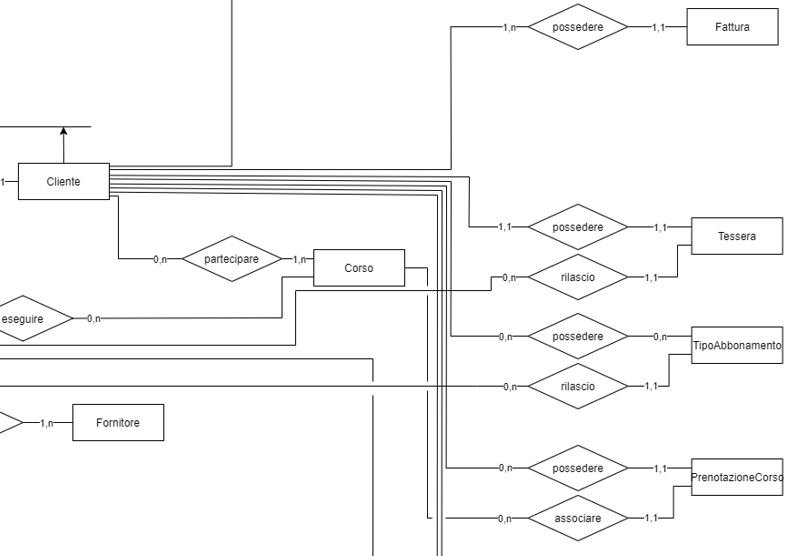

2016
- Imparo il Diagramma a blocchi
- Vado a conoscere il primo modo di rappresentare la logica di un programma, in particolare come vengono rappresentati lo start, l'end, i comandi e le condizioni (if, for, while)
- Faccio i miei primi passi con la programmazione: C++
- Ho imparato a "convertire" il diagramma a blocchi in codice , capito il concetto di compilatore e testato per la prima volta un mio programma

2017
- Stage presso startup Herotech di 2 mesi
- Vado a lavorare come stagista presso Herotech, ai tempi una starup. Ho lavorato insieme ad altri studenti per la realizzazione di un gioco mobile in Unity3D andando ad usare come linguaggio di programmazione c#
- Studio la programmazione ad oggetti con Java
- Ho imparato un nuovo modo di intendere i Tipi e la differenza tra Tipi Primitivi e non. Mi vengono introdotte anche l'ereditarietà, il concetto di superclasse, sottoclasse e interfacce

2018
- Stage di 2 mesi presso Elis (Bootstrap)
- Insieme ad altri studenti ho partecipato ad uno stage di formazione Elis per il framework Bootstrap, andando a introdurre anche il framework Angular.
- Studio i Database ralazionali, MySQL e PHP
- Vado a studiare i concetti base di Database Relazionali: Modello ER, Modello Relazionale e Modello Fisico, DML, DDL, DCL e le query (MySQL). Oltre mi viene introdotta il PHP dove tramite un web hosting locale (Apache) posso estrapolare i dati di un database tramite una query e esplorlo all'utente tramite il sito web
2019
- Studio Python, le Matrici e gli Alberi
- Inizio i miei studi su Python e apprendo le basi del linguaggio. Vado ad approfondire altri tipi di strutture dati come le matrici (come lista di liste), dizionari e alberi (introducendo la ricorsione).
- Studio la complessità di un algoritmo
- Argomento ancora non toccato, vado a studiare la complessità di un programma. In particolare il calcolo della complessità e gli algoritmi di riodinamento (heap, bubble e merge sort).
2020
- Progetto un gioco in Java
- Ripasso gli argomenti trattati in precedenza e imparo la programmazione ricorsiva anche in Java. Realizzo un progetto in java (pubblicato nei progetti)
- Progetto un Database SQL con un collega
- Ripasso i database relazionali, imparo la normalizzazione e realizzo un progetto di un database insieme ad un collega (pubblicato nei progetti) 

2021
- Imparo Haskell
- Approfondisco il metodo ricorsivo tramite il linguaggio haskell, faccio vari esercizi in haskell (pubblicati nei progetti)
- Progetto su Interazione Uomo Macchina
-
Imparo i concetti base di Interazione Uomo Macchina:
studio concetti di requisiti funzionali e non, interviste, questionari, story telling, prototipo.
Inoltre faccio un progetto per la realizzazione di un prototipo insieme ad alcuni colleghi (pubblicato nei progetti)


2022
- Progetto Sito Front End
- Ripasso i concetti base di HTML, CSS e JAVASCRIPT. Ripasso il framework Bootstrap e realizzo "HeartBeat" un progetto insieme ad un collega con le tecnologie appena citate (pubblicato nei progetti)
- Imparo nuove Tecniche di Programmazione
- Studio complessità e tecniche di programmazione. In particolare studio sugli algoritmi di base Dividi et Impera, Programmazione Dinamica e Backtracking

2023
- Progetto Sito Personale
- Realizzo nei linguaggi HTML, CSS e Bootstrap questo sito che verrà aggiornato ogni TOT con le nuove tecnologie che imparo e con i progetti/esercizi
- Studio di base di Typescript e Angular
-
Studio la base di Typescript, un estensione di javascript che consente la tipazione delle variabili e l'introduzione delle classi, classi astratte e interfacce.
Dopo aver studiato le basi di Typescript studio Angular. In particolare:
- Componenti
- Direttive
- Servizi
- Pipe
- Route e Basi delle Guard
- Basi degli Observable e rxjs
- richieste HTTP e Autenticazione ad un Auth Server Firebase.

Prossimi Studi
- Studio approfondito di librerie Angular
- In futuro voglio dedicarmi completamente nello sviluppo front-end con lo studio di librerie Angular come NgRx, Angular Three (per la programmazione 3D di siti Angular), lo studio di Capacitor e Electron